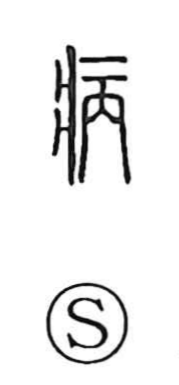

病

Uncategorized
Kun: yamu, yamai | On: byo, hei
illness ・ disease ・ to fall ill ・ weariness ・ grief
Explanation
A phono-semantic character: 疒 marks the domain of illness, while 丙 serves as the phonetic, giving the sound (hei/byo). In the Shuowen it is explained as a 疾 that has grown—an ailment that advances or becomes established—hence a serious or worsening sickness. This sense is seen in the Analects (Zi Han IX:12), where 子疾病 refers to Confucius being gravely ill. From this core, the character came to mean ‘illness’ and ‘to fall ill,’ and by extension also expresses being worn out with fatigue or weighed down with grief.